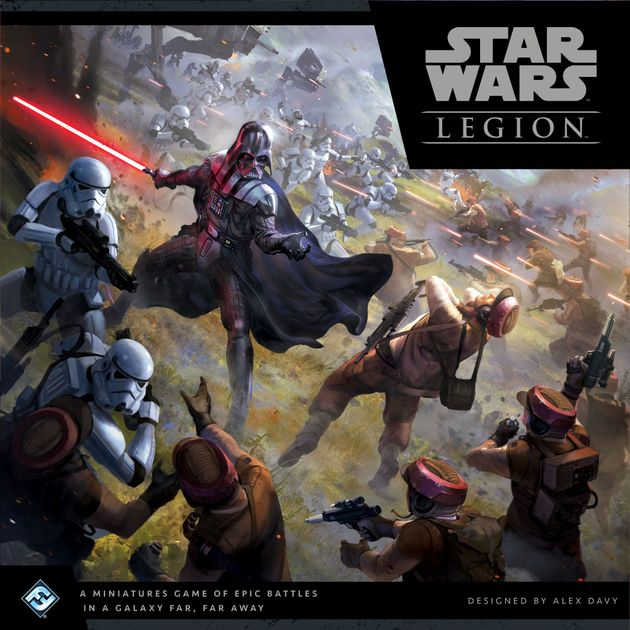
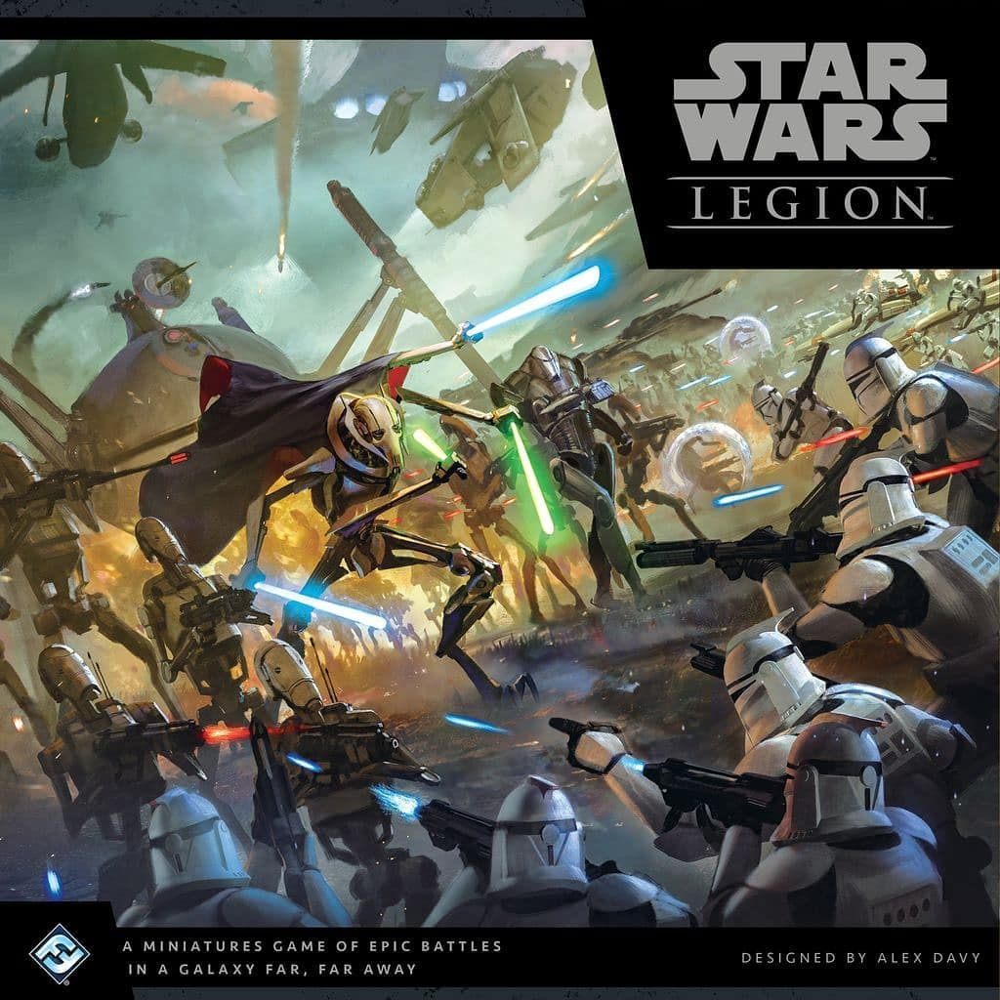
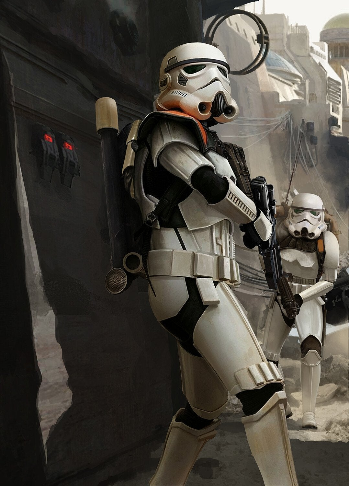
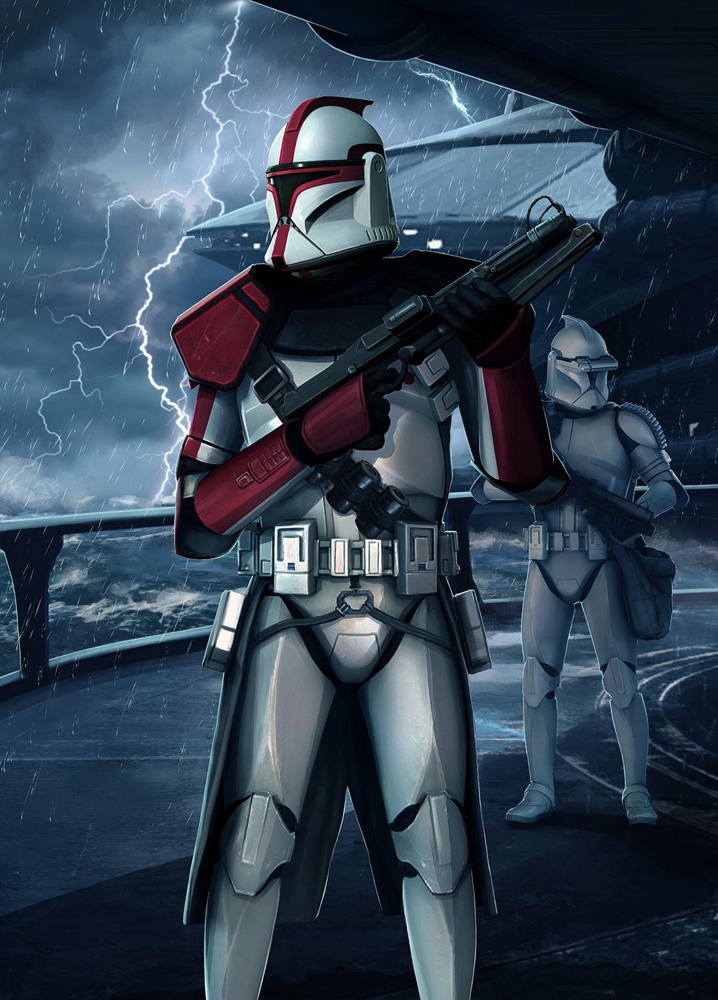
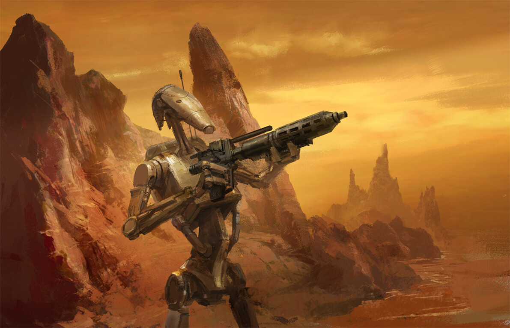
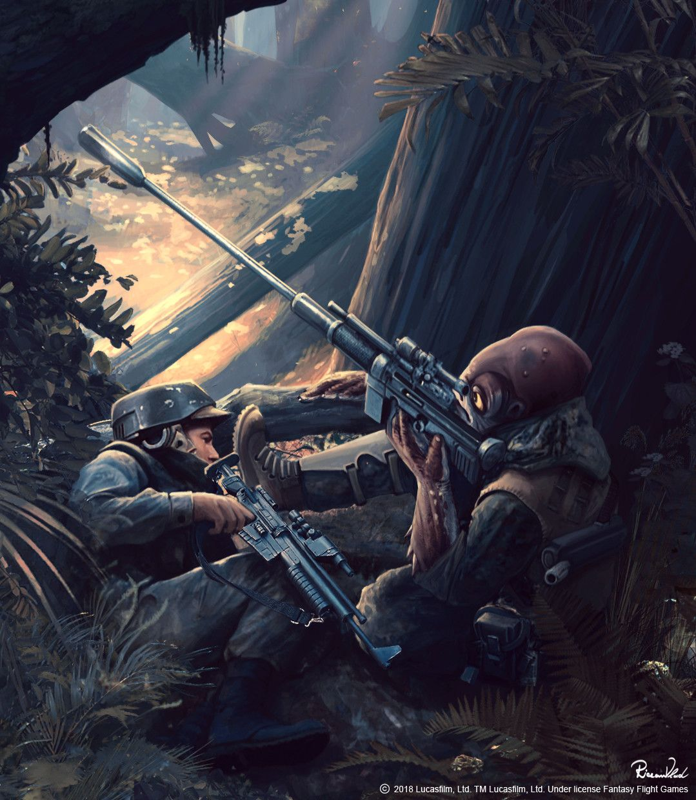
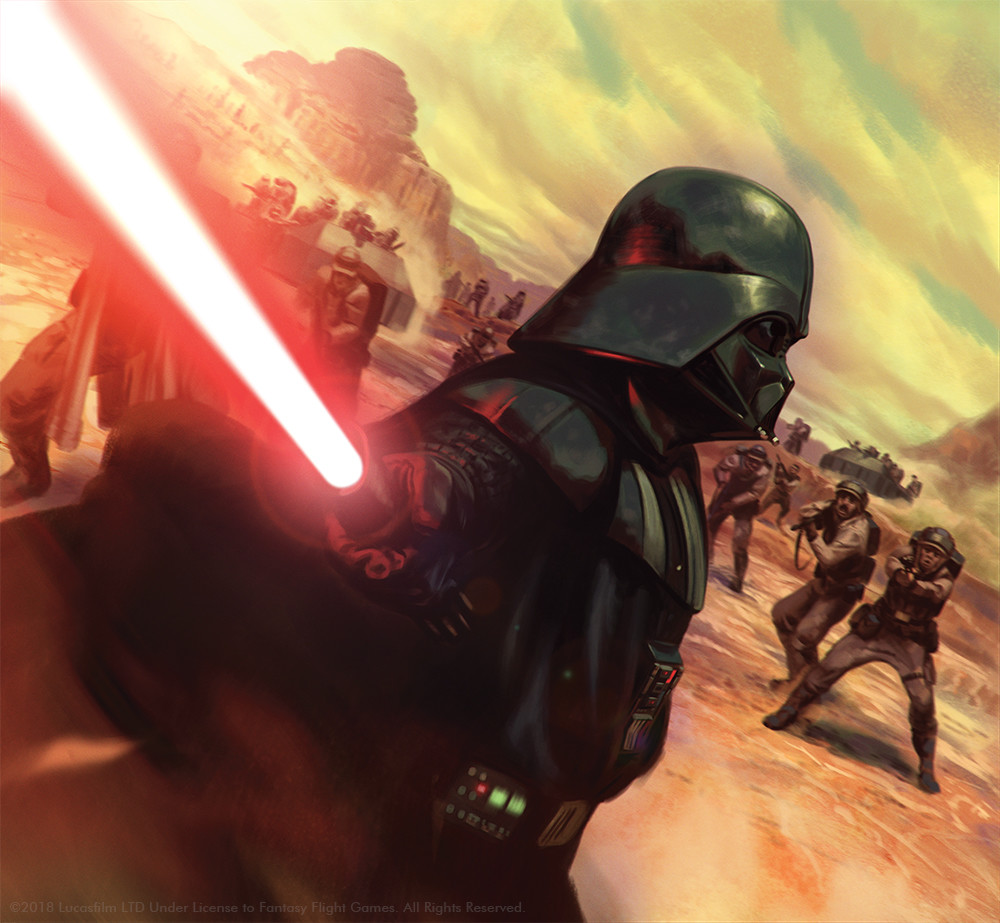
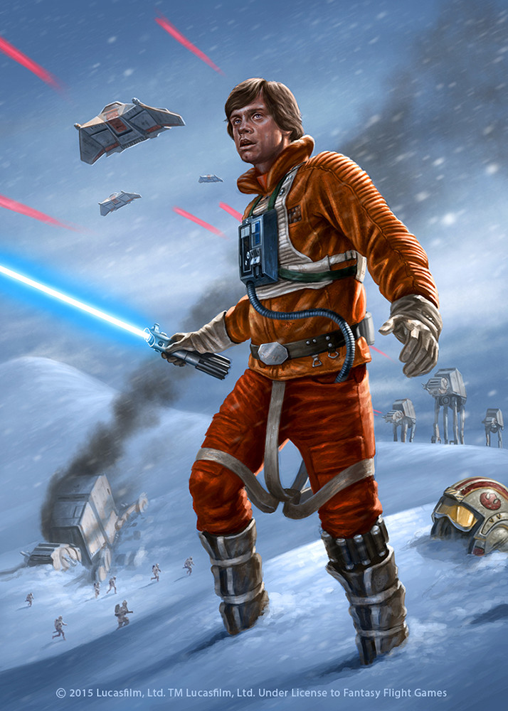

What is Star Wars Legion and why should you play it, basic game rules, mechanics and factions?
This is going to be the main page of my website. Star Wars legion is a tabletop miniature game where different armies from the Star Wars universe come and fight each other in epic conflicts. There are 4 factions or armies you can chose which are, The Galactic Empire, The Rebel Alliance, The Galactic Republic and the Separatist Alliance. Each faction has their strengths and unique characteristics and are a blast to play. People who are new to the game will be wondering what faction they should play and why, this will also be a page where it gives a breakdown of each faction and what makes them unique and why the reader should play them. This can apply to new players who want to get to know what legion all is about and maybe invest in an army, or veteran players looking to expand their current collection.
 Strategies and List Ideas.
In this sub page it will be filled with different ideas on how to play the game. This will apply to new and old players alike, where new players are trying to learn more about what strategies would be interesting to them and how veterans can find new ways to run their existing armies. Each article will be carefully written and provide list ideas for the people reading the section to apply right away.
   Hobby Page
Lots of times people who play legion come to focus on the hobby aspect of the game. I know personally quite a few people who have the most fun with just painting their miniatures and focusing more on the creative side of the hobby. I would like to create a second sub page where people are able to see spotlighted hobbyists’ projects. This will be good for new players to find inspiration and ideas to improve their painting and hobbling skills while veterans can find ideas for their next army to paint. Either way, players will be able to enjoy more of the artistic side of legion by visiting this page.
 Purpose and Goal (not an individual page)
Overall, I believe that people will come to my website to expand their knowledge on legion. No other website is dedicated to the players to help them improve in all areas of their game, whether it be building lists and executing them to hobbling and getting paint onto their armies on the table. To best complete these tasks, I’ve asked several members of my legion community to help create articles and share their hobbling creations. I want the website to be driven by its players and by everyday legion enjoyers. Entering a new game or hobby can be kind of daunting, not knowing the ins and outs of a certain system can be intimidating and shy people away from diving in. Legion Station will be a good starting point for those people who just want to get the straight details and facts about the game and don’t have to work through rule books or jump through hoops to just know how the game is played. Veteran players on the other hand also love to learn little bits of information to up their game. I know personally I love to learn more about a unit that I use frequently and to see other perspectives on how I can improve using it or how I can best make it fit into a certain army archetype. I want the legion station to be a place where all players can come to learn more about the game we love, no matter how much experience they have with it.